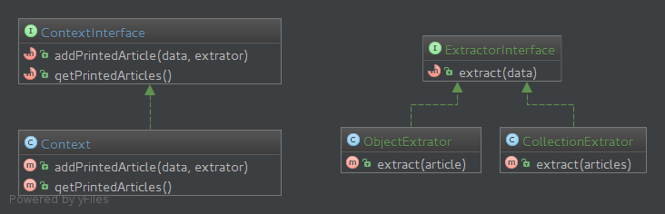

Les design patterns
Qui suis-je ?
Arnaud Langlade (@_aRn0D)
Développeur Symfony chez Clever Age
Sylius core team member
www.clever-age.com / @CleverAge

Chain of Reponsability
Eviter le couplage entre l'émetteur d'une requête et son récepteur en donnant à plus d'un objet une chance de traiter la requête
Pourquoi l'utiliser ?
Le système doit gérer une requête, la requête implique plusieurs objets pour la traiter.
Exemple : Formater le contenu d'un article, gérer les media, la pub, la mise en forme, etc...
La solution la plus simple
class ArticleRewriter implements ArticleRewriterInterface
{
public function rewrite(ArticleInterface $article)
{
if ($article->isPremium()) {
// On tronque le contenu
} elseif (str_pos($article->getContent(), '') {
// Insertion d'une image
} elseif (...) {
// Oui, cette methode peut devenir la plus longue du monde.
}
}
}
Le diagramme

Le Formater
class ImageFormater extends FormaterInterface
{
public function support(ArticleInterface $article, $format)
{
return 1 === str_pos($article->getContent(), '');
}
protected function format(ArticleInterface $article)
{
$content = str_replace(
'',
' ',
$article->getContent()
);
$article->setContent($content);
}
}
',
$article->getContent()
);
$article->setContent($content);
}
}
Le Rewriter
class ArticleRewriter implements ArticleRewriterInterface
{
/** @var FormaterInterface[] */
private $formaters = [];
public function rewrite(ArticleInterface $article, $format)
{
krsort($this->formaters);
foreach ($this->formaters as $formater) {
if ($formater->support($article, $format)) {
$formater->format($article); // Possibilité de briser la chaine.
}
}
}
public function addFormater($priority, FormaterInterface $formater)
{
$this->formaters[$priority] = $formater;
}
}
Le Rewriter
$article = // Je vais chercher mon article en base.
$articleRewriter = new ArticleRewriter();
$articleRewriter->addFormater(new ImageFormater());
$articleRewriter->addFormater(new PollFormater());
$articleRewriter->addFormater(new PremiumFormater());
$articleRewriter->rewrite($article);
Conclusion
- if/switch killer, la classe qui traite la requète est moins complexe.
-
Chaque étape étape est isolé dans un classe :
- Repecte le principe de reponsabilité unique.
- Code plus facilement testable.
- Code ouvert à l'extension
- Code facile à maintenir en cas d’évolution/changement.
Strategy
Permet de définir plusieurs algorithmes interchangeables dynamiquement.
Pourquoi l'utiliser ?
Dès lors qu'un objet peut effectuer plusieurs traitements différents, dépendant d'une variable ou d'un état.
Exemple: Filtrer une collection d'object.
ArrayCollection de Doctrine
$articles = new ArrayCollection([$article, $otherArticle])
$articles->filter(function (ArticleInterface) {
// Ici on déporte dans une closure l'algorithme de filtre
});
Le diagramme
Le DataExtrator
class ObjectExtrator implements ExtractorInterface
{
public function extract($article)
{
if (!$article instanceof ArticleInterface) {
throw new \InvalidArgumentException('An ArticleInterface is expected');
}
return [$article->getId()];
}
}
Le DataExtrator
class Context implements ContextInterface
{
public function addPrintedArticle($data, ExtractorInterface $extrator)
{
$articlesIds = $extrator->extract($data);
$this->printedArticles = array_merge($this->printedArticles, $articlesIds);
}
public function getPrintedArticles()
{
return $this->printedArticles;
}
}
Conclusion
- Respecte le principe de responsabilité unique
- Code ouvert à l'extension, il est facile d'ajouter les algorithmes
- Code facile à maintenir en cas d’évolution/changement.
Merci! Questions ?
Arnaud Langlade
Twiter @_aRn0D